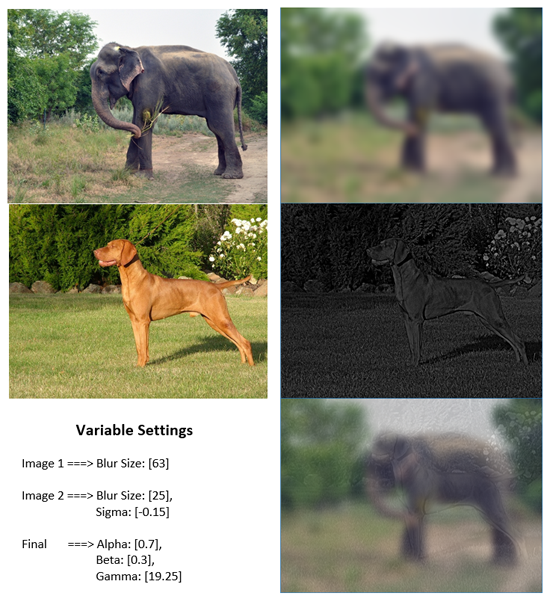
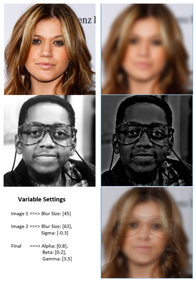

A project that I worked on for my capstone at PSU with a team consisting of 7 members, including myself. The project is an SPA web application that uses Jama’s REST api to pull data from their system. It provides the end user with a macro view of their project, allowing someone such as a project manager to visualize the process. This will allow them to find areas that need attention and to move the project forward.
The project’s foundation is Node.js with Express.js as the MVC framework. My primary role was to work with Michael Hansen to configure the visual appearance and functionality of the graph with data from the REST api. We used the D3.js library to make the implementation process easier and the finish product more robust. I also had the opportunity to work on some of the views and code running on the server side. If you want more detailed information about the project then you can visit the github page.
Super Event recording software is a program that allows a user to keep track of their audio recordings. This software is ideal for people who record audio of speakers or musical audio and want to organize it in a meaningful way. The user will be able to store subjects of their recordings and then Sessions with tracks. This software is using the Universal Windows Platform (UWP) framework. The front end is made in XAML, coding done in C# and the database is made using SQLite. Interactions between the code and the database is achieved through the .Net Entity Framework. This is a personal project that I work on during my spare time as a hobby.
Bulletin Group Blast is an app for social networking within an organization. This app is for situations when an organization is getting big and is subdivided into groups. Each group is independent in some way, but is still a part of this organization. This app allows organizations to push announcements, events, discussions at the organization level, group level and individual level. For example, a church is one organization that has various age groups. In the Bulletin Group Blast app you would create a group for elders, staff, youth, parents, etc. Then the administrator of the group can then push out calendar events, announcements, conversations and notifications for their specific group to synchronize everyone that joined the group.
This project was an assignment for an Open Source class that I was taking. It is an android app that was put together using the Android Studio. The user interface was put together using built in features defined in XML and then functionality given through backend Java code. The persistent data or database used is SQLite. Most of the fundamental user interface, data structures and database is constructed, but functionality is still limited. I have decided to discontinue this project due to a lack of available time.
This project is an assignment for my computer vision class. The assignment was to make a hybrid image generator. This means that if you were to take two images and combine them in such a way that when up close you would see the first image and further away you would only see the second image. It uses the opencv libraries in a windows command prompt project within Visual Studio. The coding language used is C++.
Below are the results of my application.
 This is the second project for my computer vision class. It is basically a work in progress currently. This project uses C++ and opencv libraries to achieve object recognition and object tracking. For the object recognition portion I am using machine learning with Haar cascade classifiers. The tracking part is something that I am still working on and have not fulling decided which method to use.
The program takes in either an image or a video file as input and then parameters for selecting the type of tracking and recognition. Below are some images of the results.
Resources: